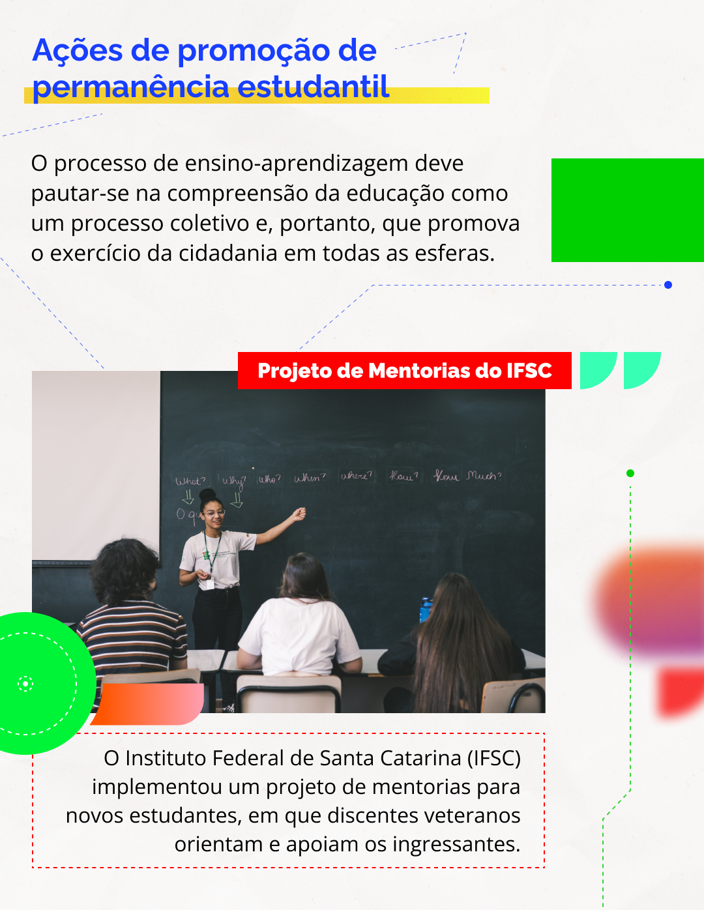
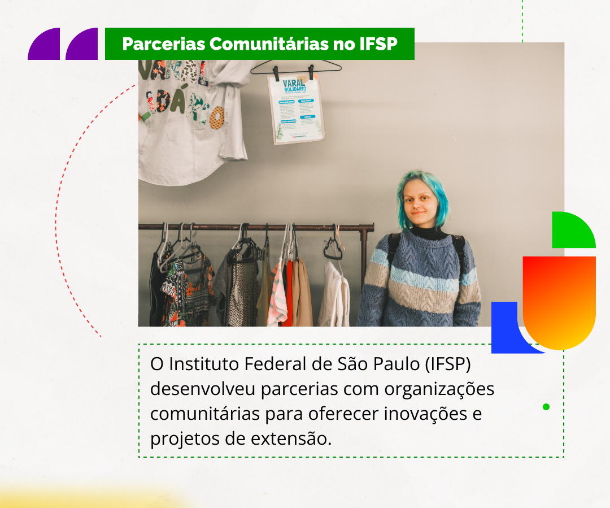
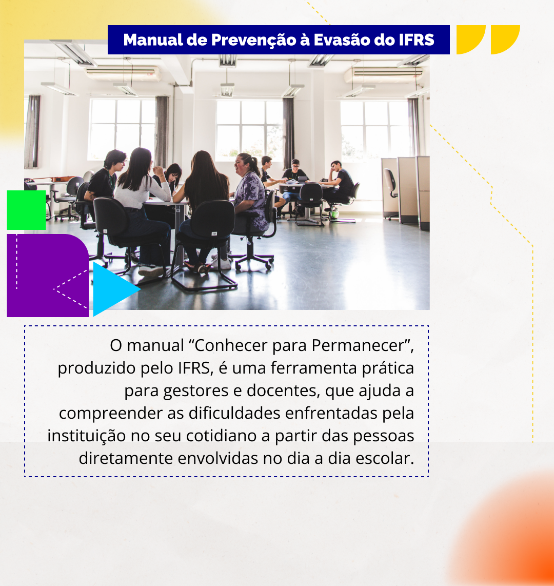

Políticas e Estratégias para a Permanência
As instituições educacionais devem adotar uma perspectiva integrada. Será necessário considerar fatores internos e externos a elas, além de fatores didáticos e pedagógicos, buscando uma relação dialética entre eles. Nesse dialogismo, há complexidades nas relações entre discentes e educadores, por exemplo, e mesmo entre trabalho, estudo e outras demandas da vida – sendo estas relações vistas como fatores motivadores para a permanência. Por isso, as estratégias institucionais devem estar voltadas ao fortalecimento do vínculo dos estudantes com o ambiente escolar.
O sentimento de pertencimento está atrelado à permanência e ao exercício da cidadania, uma vez que o tripé ensino, pesquisa e extensão pode atender a comunidade onde a instituição se insere, por meio de práticas e projetos que incentivem e apoiem a autonomia dos estudantes. Nesse sentido, a experiência dessa tríade, além de promover a autonomia estudantil, pode viabilizar o território onde está inserida, atendendo às demandas da comunidade e consequentemente criando aproximações entre diferentes esferas da vida do estudante – além de promover o sentimento de pertencimento, tanto do discente quanto da família e da comunidade externa.
A própria adesão da instituição, de seu corpo docente e discente às demandas comunitárias dialoga com o trabalho como princípio educativo, evocando a possibilidade de geração de renda por meio de bolsas, parcerias e iniciativas que promovam a qualificação durante o processo formativo. Assim como a educação é um direito, o trabalho também é, pois reforça a importância do apoio ao egresso, que é potencializado pelo contato contínuo entre a instituição e a comunidade sob a articulação entre ensino, pesquisa e extensão.
A seguir, confira alguns exemplos práticos de políticas públicas e ações que foram adotadas na Rede Federal de Educação Profissional e Tecnológica:

Título: Projeto de Mentorias do IFSC
Fonte: Gaia Schüler (2023a).
Elaboração: Prosa (2025d).
O Instituto Federal de Santa Catarina (IFSC) implementou um projeto de mentorias para novos estudantes, em que discentes veteranos orientam e apoiam os ingressantes. Tal ação pode ajudar a combater casos em que os estudantes deixam a escola a partir da interpretação das lacunas da formação anterior como um empecilho para novas aprendizagens. O êxito escolar é um fator de fortalecimento da permanência. Além disso, ao engajar outros estudantes no processo, essa prática tem demonstrado impacto positivo na integração dos estudantes com o ambiente institucional.

Título: Parcerias comunitárias no IFSP
Fonte: Gaia Schüler (2023b).
Elaboração: Prosa (2025e).
O Instituto Federal de São Paulo (IFSP) desenvolveu parcerias com organizações comunitárias para oferecer inovações e projetos de extensão. Iniciativas como esta podem contribuir para gerar e fortalecer o sentimento de pertencimento dos estudantes, atribuindo significado social para eles. Há uma dimensão que envolve diretamente os discentes das comunidades atendidas, além de uma elaboração no sentido de atribuir significado real para as aprendizagens aplicadas para a melhoria da qualidade de vida das pessoas contempladas. Essas iniciativas auxiliam os estudantes a utilizarem o aprendizado em contextos reais, fortalecendo sua relação com o curso e com o mercado de trabalho.

Título: Manual de prevenção à Evasão do IFRS
Fonte: Gaia Schüler (2023c).
Elaboração: Prosa (2025f).
O manual "Conhecer para Permanecer", produzido pelo IFRS (Instituto Federal do Rio Grande do Sul), é uma ferramenta prática para gestores e docentes. Ele apresenta estratégias baseadas em dados e boas práticas que ajudam a compreender as dificuldades enfrentadas pela instituição no cotidiano, a partir das pessoas diretamente envolvidas no cotidiano escolar. As intervenções de gestores – ouvindo todos os participantes na escola – com abordagens próximas, simples e imediatas, trazem um impacto direto e evitam que os problemas cresçam. Mais ainda: a sistematização das questões escolares oferecem elementos para ações contínuas e auxiliam um planejamento fidedigno à sua unidade.
A partir desses três projetos, podemos vislumbrar algumas possibilidades de ação, tanto para os estudantes quanto para os docentes e gestores que buscam fortalecer a permanência estudantil. Seu caráter inspirador se pauta na compreensão da educação como um processo coletivo e que deve promover o exercício da cidadania em todas as esferas. Em relação aos discentes, por exemplo, no Projeto de Mentorias, eles podem exercer um outro papel além da relação docente-discente: a partir de uma autopercepção em relação aos aprendizados construídos, os estudantes podem exercitar a educação emancipatória em uma perspectiva de desenvolvimento de autonomia. Tais iniciativas dialogam com a LDBEN (Lei nº 9.394/1996) e promovem o desenvolvimento do educando, o exercício da cidadania e a qualificação para o trabalho. Em uma perspectiva freiriana, os projetos de parcerias com organizações comunitárias e o Manual “Conhecer para Permanecer” promovem a expansão da leitura do mundo do educando ao estabelecer pontes de diálogo e de senso de comunidade, e fortalecem o senso de pertencimento ao ambiente escolar.
Para o entendimento e a adoção de medidas de combate dos fenômenos de evasão e de retenção na Rede Federal, instituiu-se a construção dos planos estratégicos elaborados em resposta ao Acórdão nº 506 de 2013 (Brasil, 2013d), do Tribunal de Contas da União (TCU), recomendando ao MEC um plano voltado ao tratamento da evasão na Rede Federal de Educação Profissional. Tal ação foi orientada pela Setec/MEC no Documento Orientador para a Superação da Evasão e Retenção na Rede Federal de Educação Profissional, Científica e Tecnológica (Brasil, 2014). Entre outros elementos, o documento aponta políticas de inclusão e de permanência não apenas como amplificadores do acesso, mas também enquanto promotoras de equidade, criando condições para que todos os estudantes possam atingir seu pleno potencial.
No primeiro capítulo do Documento Orientador, é contextualizado um breve histórico da Rede Federal, a sua caracterização, os seus princípios, objetivos e a sua função social. Além disso, descreve-se as ofertas educacionais realizadas pelas instituições e se discute- os dados de evasão e retenção na Rede. O segundo capítulo apresenta as bases conceituais relativas à evasão e à retenção a partir da literatura disponível sobre a temática. Essas bases conceituais norteiam as propostas estabelecidas para o plano estratégico, objeto do terceiro capítulo. Assim, o documento tem o propósito de orientar o desenvolvimento de ações capazes de ampliar as possibilidades de permanência e de êxito dos estudantes no processo formativo oferecido pelas instituições da Rede Federal, respeitadas as especificidades de cada região e o território de atuação (Brasil, 2014).